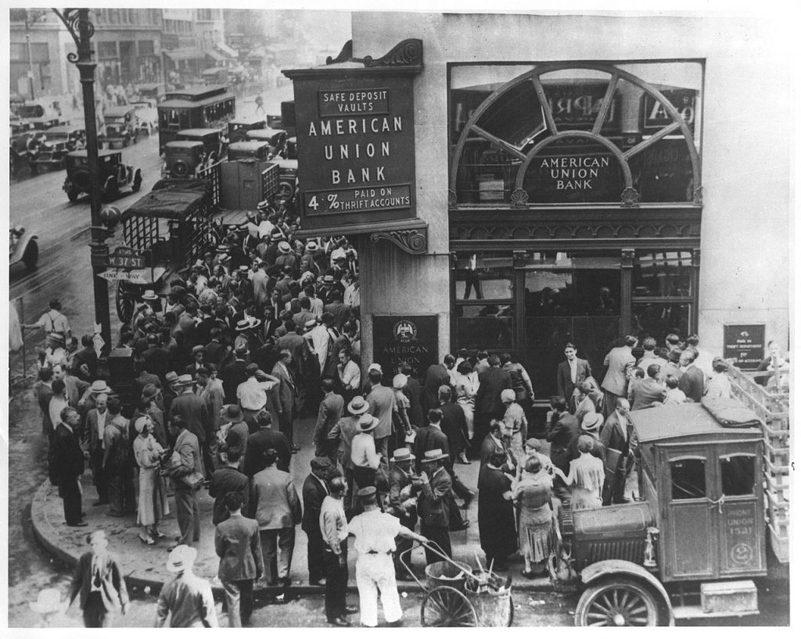
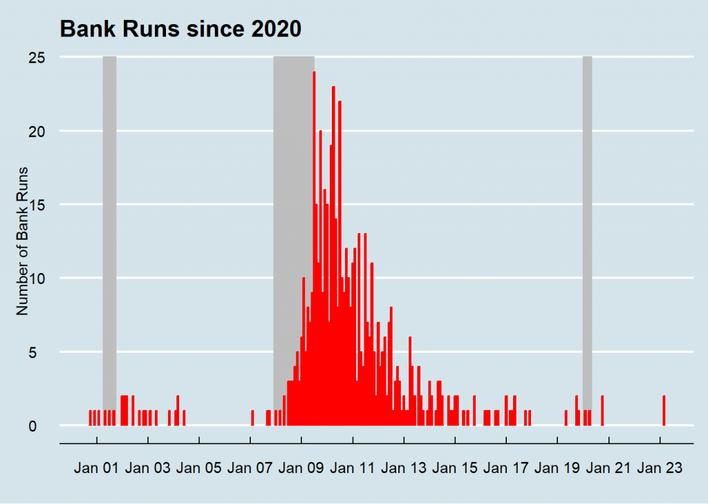

Because of the fractional reserves nature of the American financial system, bank runs are unavoidable, but if the banking system is properly regulated and monitored, bank runs should be unlikely. In its most simple form, banks operate by accepting customer deposits and lending those funds to borrowers, earning interest on the loans. But due to the fractional reserve system, each dollar deposited into a bank can be lent several times, exacerbating the mismatch between the liquidity of the deposits and the longer-term nature of the loans (although this can still happen even if banks held 100% of the depositors’ funds). A run on a bank happens when depositors withdraw their funds and the bank does not have enough liquidity reserves to meet the demand. This situation occurs for many reasons, including depositors losing faith in the bank due to fear or speculation about a bank’s solvency, even if the bank is financially sound. This can set off a chain reaction in which the bank may be forced to sell assets at a loss in order to raise funds or even declare bankruptcy, causing further panic and runs on other banks, and promoting a self-fulfilling prophecy of a crisis in the financial system.

Before the Great Depression
Before the Banking Act of 1933, financial panics and bank runs were common in the American financial system. Runs on banks will lead to bank failures and the loss of both depositors and investors’ assets with ripple effects through the rest of the economy, most of the time leading to economic crises. Without a central bank, the U.S. Treasury had to rely on private institutions or individuals to save the financial system and prevent the government from defaulting on its obligations. Most notably, J.P. Morgan is credited with restabilizing the U.S. banking system during the panic of 1907, a financial crisis that threatened to bring the entire economy down. It wasn’t the first time that Morgan had played a role in restoring the financial system, but it would be that last. After the crisis, a commission to establish an American Central Bank was formed, and led to the creation of the Federal Reserve, in charge of, amongst other things, preserving financial stability.
The Federal Reserve and the FDIC
The creation of the Federal Reserve in 1913 and the passing of the Banking Act of 1933 initiated the regulatory framework for achieving financial stability. The Federal Reserve became the organization responsible for supervising and regulating banks and other financial institutions in the United States. It accomplishes that task by assessing banks’ financial conditions, risk management practices, and compliance with laws and regulations. On the other hand, the Banking Act created the Federal Deposit Insurance Corporation, an institution that protects depositors’ funds (up to a limit) in case of bank failures. According to the FDIC, no depositor has lost their money since its creation.
Bank Runs in Recent History
By increasing confidence in the financial system, these two institutions significantly decreased the number of bank runs in the United States since the Great Depression and prevented the loss of depositors’ assets, but did not eliminate bank runs completely. Bad investments by banks and changing economic conditions can still play a role in customers’ confidence on a bank and a domino effect on the rest of the system. In the 1970s, Franklin National Bank, at the time the 20th largest bank in the United States, experienced a run, resulting from bad investments in foreign exchange markets. Depositors started withdrawing millions of dollars every day leading to the bank’s failure and the FDIC taking over control of the bank. Bad investments would continue to be the main cause of bank runs for the rest of the 20th century and beginning of the 21st, with notable examples being the Continental Illinois National Bank and Trust Company, and Washington Mutual (the largest bank failure in U.S. history).

The Run on Silicon Valley Bank
The bank run on Silicon Valley Bank (SVB) seems to be the case of good investments going bad due to changing economic conditions. With the pace of the interest increases by the Federal Reserve to combat inflation, not only the bank depositors’ started to withdraw their funds in search for higher interest paying opportunities but also the value of the bank’s financial assets dramatically decreased as a result of higher interest rates and lower bond prices. It only took a quick look into the bank’s financial position to realize that SVB was selling assets at a loss to fulfill depositor’s demands, initiating the second-largest and perhaps one of quickest bank failures in the history of the United States. So far, only one other bank has failed (Signature Bank of New York) since the collapse of SVB, now under bankruptcy protection, and it seems that the quick intervention by the Federal Reserve, the Department of the Treasury, and an injection of capital by 11 of the largest banks (a la J.P. Morgan rescue) has stopped the contagion to the rest of the financial system.
Conclusion
What should be clear is that there is no need to panic and withdraw funds during a bank run, since for one, the assets are insured by the FDIC up to $250,000 (and the government has pledged to make depositor’s whole even in situations where the customer’s funds exceed that limit), secondly, doing so can generate a self-fulfilling prophecy by transforming a confidence crisis into a financial crisis.